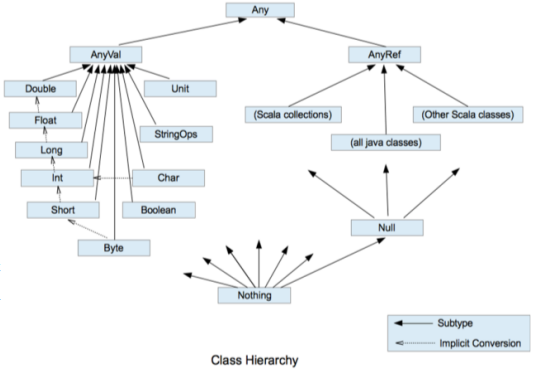

Day02
📌 常量与变量
object Learn01_VarVal {
def main(args: Array[String]): Unit = {
var a: Int = 10 // var定义变量variable，必须要有初始值
val b: Int = 20 // val定义常量value，必须要有初始值
var a1 = "定义变量时可以省略变量类型，类型由编译器自动推导"
val b2 = "定义常量也是同理，但常量不可改"
val _whm = new StudentScala("_whm", 26)
_whm.age = 27
_whm.printInfo()
var +-*/#! = "操作符命名的变量" // 变量可以以操作符作为命名，且只能有操作符，包括+-*/#!等
var `object` = "反引号+关键字命名的变量" // 以反引号包括起来的关键字也可作为变量命名
}
}
📌 字符串格式化输出
| 方式 |
补充说明 |
printf("姓名：%s，年龄：%d", name, age) |
%s、%d作为占位符，类似C语言的格式化输出 |
s"姓名：${name}，年龄：${age}" |
字符串模板 |
f"圆周率保留2位小数：${pi}%2.2f" |
%2.2f，第一个2表示字符长度不足2时，以空格补全 |
"%.2f".format(10.0 / 3)" |
Scala 3.4.1："Use formatString.format(value) instead of value.formatted(formatString)" |
raw"圆周率保留2位小数：${pi}%2.2f\n" |
raw表示原样输出，不会转义 |
| 使用三引号包括字符串 |
保持多行字符串原格式，复杂的SQL语句可以用 |
object Learn02_Str {
def main(args: Array[String]): Unit = {
var name: String = "whm" // var定义变量variable，必须要有初始值
val age: Int = 26 // val定义常量value，必须要有初始值
// 字符串格式化输出printf
printf("姓名：%s，年龄：%d", name, age)
println()
// 字符串模板
println(s"姓名：${name}，年龄：${age}")
val pi = 3.1415926
println(f"圆周率保留2位小数：${pi}%2.2f") // %2.2f，第一个2表示字符长度不足2时，以空格补全
println(raw"圆周率保留2位小数：${pi}%2.2f\n") // raw表示原样输出，不会转义
// 三引号包括起来字符串，保持多行字符串原格式，复杂的SQL语句可以用
var tmp =
s"""--首先执行了两个表的笛卡尔积，然后通过WHERE子句进行筛选。
|WITH A AS (SELECT ROWNUM AS RN1, T.* FROM scores T where t.subject = 'math') ,
| B AS (SELECT ROWNUM AS RN2, T.* FROM students T )
| SELECT * FROM A, B WHERE A.RN1 = B.RN2 AND A.STUDENTNAME = ${name};
|""".stripMargin
println(tmp)
}
}
📌 读写文件
object Learn03_IO {
def main(args: Array[String]): Unit = {
// 控制台输入输出
println("请输入字符串：")
val str = StdIn.readLine()
println("请输入数字：")
val value = StdIn.readInt()
println(str + " " + value)
// 写入文件
val writer = new java.io.PrintWriter("resource/learn03_IO.txt")
writer.write("Hello scala by java writer\n")
writer.write(raw"Hello world!\n")
writer.close()
// 从文件中读取
val file = scala.io.Source.fromFile("resource/learn03_IO.txt") // 路径默认为项目根目录
file.foreach(print)
}
}
📌 Java IO
public class JavaIOReview {
// 字节流与字符流，两者不能混用（无法确定多少个字节等于一个字符），或者先提前做转换。
// InputStream字节流-适用于处理二进制数据，如图片、音频、视频或任何非文本文件。
// Reader字符流-专门用于处理文本数据，通常需要指定字符编码，如 "UTF-8"。
public static void main(String[] args) throws IOException {
// FileInputStream-文件字节流，每读取一个字节直接打印
// 加多一层缓冲BufferedInputStream，先读取到缓冲，超过阈值再打印，批处理以提高效率
InputStream in = new BufferedInputStream(new FileInputStream(path));
int i = -1;
while ((i = in.read()) != -1) {
System.out.print((char) i);
}
// 通过装饰者模式，核心功能不变的同时，扩展更丰富的功能。
Reader in2 = new BufferedReader(new InputStreamReader(new FileInputStream(path), "UTF-8"));
String s = null;
while ((s = ((BufferedReader) in2).readLine()) != null) {
System.out.println(s);
}
}
}
📌 数据类型
- Scala中所有数据都是对象，都是Any的子类。
- 分为两大类，数值类型
AnyVal和引用类型AnyRef。
- 隐式转换时按精度递增转换：
Byte Short Int Long Float Double
Byte Short Char三者需要进行计算需要先转换为Int类型

object Learn04_DataType {
def main(args: Array[String]): Unit = {
// 1.整数类型：Byte Short Int Long
val a: Long = 1111111111111111L // 声明数值时默认为Int，加上L后缀才代表Long
val b1: Byte = 10 // Byte数值范围：-128 ~ 127
val b2: Byte = (b1 + 127).toByte // 强制类型转换，但溢出
println(b2) // 打印-119
// 2.浮点类型：Float Double，精度递增
val f1: Float = 3.14F // 声明小数时默认为Double，加上F后缀才代表Float
// 3.字符类型
val c1: Char = 'a'
val i1: Int = c1 // 实际是字符'a'的ASCII码，即97
// 4.布尔类型
val flag: Boolean = true // 或者false
// 5.空类型
// 5.1.空值Unit，类似void，Unit只有一个实例值()
def test(): Unit = {
println("test")
}
println(test())
// 5.2.空引用Null，Null类型只有一个实例值null（所有的类都是引用类型）
var whm = new StudentScala("whm", 26)
whm = null
// 5.3.Nothing，Scala中所有类型的子类，表示空类型，可以在异常处理中使用
def test2(): Nothing = {
throw new NullPointerException("test2")
}
test2()
}
}
{kind=link}